Strutura de una unidad de contencion
Todas las Unidades de Contención están conectadas a un pasillo de Departamento. En la sección superior de la Unidad de Contención, mostrará el Contador de Qliphoth y el nombre (o código) de la Anormalidad, y se puede ver la Enciclopedia de la Anormalidad haciendo clic en este nombre. En la parte superior izquierda se puede ver el Nivel de Riesgo de la Anormalidad, en la parte superior derecha se puede observar el número de Icono de caja PE Únicas, y en el lateral izquierdo es visible una barra que se llena durante los trabajos, mostrando el número de Cajas PE y NE producidas en el trabajo anterior o actual. En el centro de la Unidad de Contención se encuntra la Anormalidad designada a esa unidad de contencion
demostracion visual utilizando la imagen en cabeza de pagina como ejemplo:
- Nivel de riesgo: Como su nomber indica es representa tanto su nivel de peligro a la hora de dañor o directamente matar aquello sufra un aque de su parte como el la calidad de armamento que sera capas de producir
- Contador Qliphoth: El contador Qliphoth en esencia representa la paciencia de la anormalidad, posee un numero maxino indiviual por cada anormalidad, puede subir o bajar dependiendo de varias condiciones indiviuales por cada anormalidad y una ves llegado a 0 la anormalidad rompera contencion y/o realizara un ataque o evento dañino dentro de la conpania.En caso de no poseer evento o capacidad para romper contencion su contador empezara y permanecera con una x, esto no significa que esta anormalidades no sean capaces de generar daño

- Nomber de la anormalidad: simplemente indica el nombre designado a la anormalidad, en caso haber desbloquedo esta informacion mostrara en su lugar el codigo designado para la anormalidad

- Contador de cajas PE unicas: Esta es la moneda utilizada tanto para desbloquear informacion sobre la anormalidad que produce estas cajas como tambien para obtener armamento E.G.O. de la anormalidad

- Barra de resultados/cajas PE y NE producidas: El numero maximo de esta barra varia de anormalidad en anormalidad, por lo general un nivel de riesgo mas alto suele significar un mayor numero maximo, al momento de trabajar con una anormalidad cada cierto tiempo se producida un resultado, en caso de ser un buen resultado se producira una caja PE, simbolizado por las baras verde/amarillas, contando estas tanto para las cajas PE de la anormalidad como la energia que es producida, en caso de producir un mal resultado se producira una caja NE, representadas por las barras negras y rojas, estas no solo no aportan energia si no ademas dañan al agente trabajando dentro de la unidad de contencion, el trabajo se dara por finalizado una ves la barra vertical acabe de llenarse, o el agente dentro de la unidad muera o entre en panico a mitad del trascurso; una ves dada unas de estas condiciones se dara un resultado final siendo malo, neutro o bueno dependiendo de numero final de cajas PE producidas
 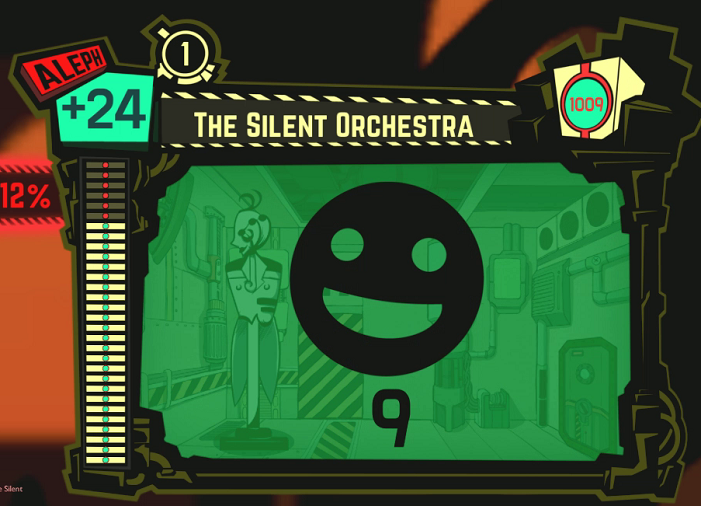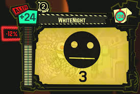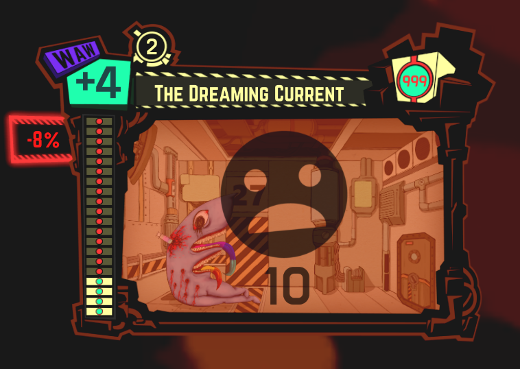
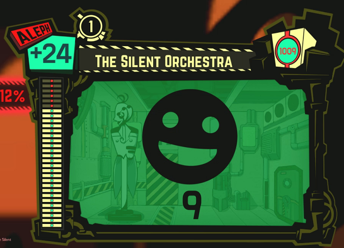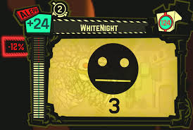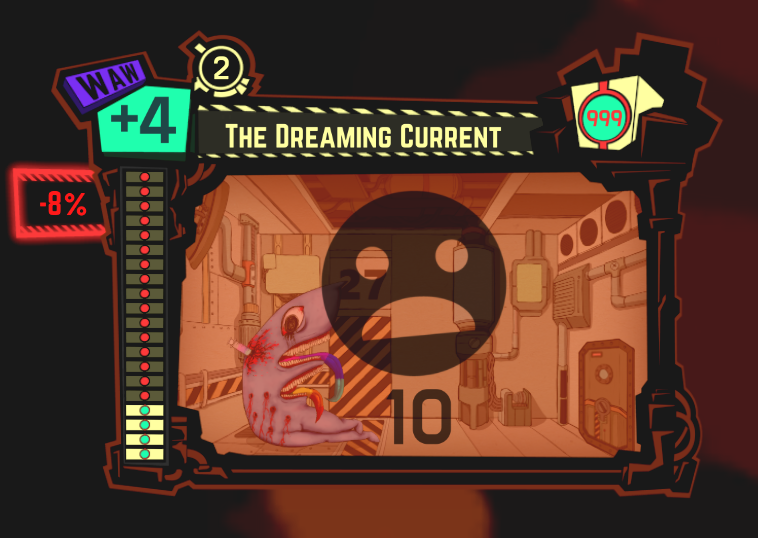
Tipos de trabajo y provabilidades de exito
Al momento de seleccionar una anormalidad se abrira el seguiente menu
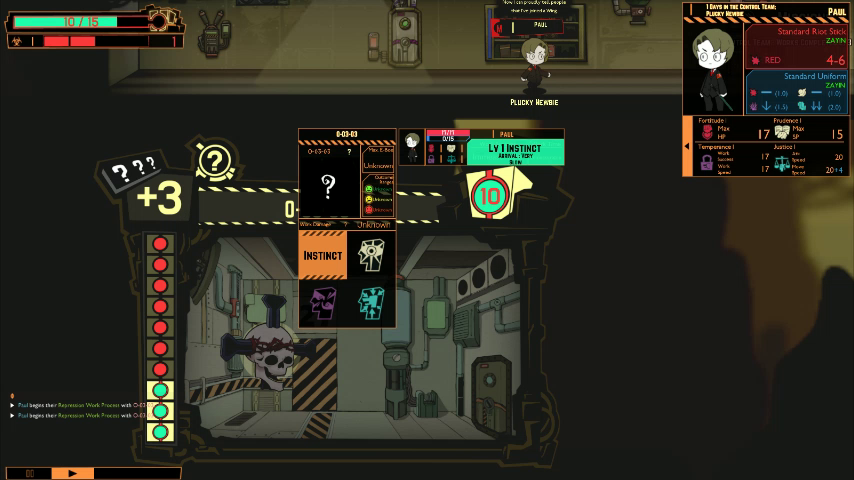dentro de este menu apareceran las differentes formas de trabajo:
- instinto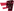, relacionado con la estadistica de fortaleza
- perspicacia 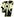, relacionado con la estadistica de prudencia
- Apego 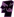, relacionado a la estadistica de templanza
- represion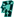, relacionado a la estadistica de justicia